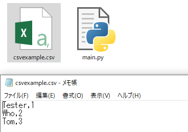
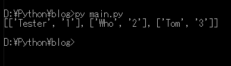
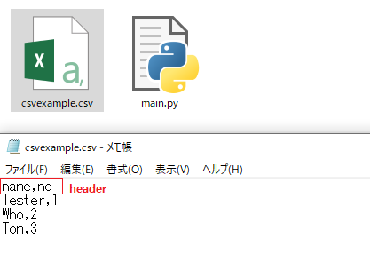
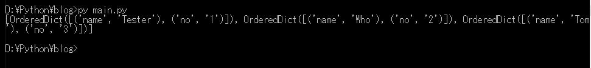

[Python] IOを利用してCSVファイルを扱う方法
こんにちは。明月です。
この投稿はPythonでIOを利用してCSVファイルを扱う方法に関する説明です。
Pythonはローカルでよく使うスクリプト言語ですから様々なファイルを扱うライブラリがよく整理しているらしいです。
他のプログラム言語だってできないことではありませんが、個人的にPythonが環境ファイルらしいなデータを作ることでは便利ではないかと思います。
CSVファイルはデータベースや様々テーブル形式のデータでよく使う形式です。
# csvモジュールをimportする。
import csv
# リストタイプのデータ(中はタプルで設定したが、リストタイプでも関係ない。)
data = [('Tester','1'),('Who','2'),('Tom','3')]
# ファイルを開く。(CSVの内部でwritelineの関数を使いらしいが、newlineを設定しなければcsvファイルで改行になる。)
with open('csvexample.csv','wt', newline = '') as handle:
# ファイルリソースをcsvモジュールのwrtier関数に入れる。
csv_out = csv.writer(handle)
# dataをcsvファイルに書く。(この関数ですべてのリストデータをCSVファイルに作成する。)
csv_out.writerows(data)
# writerow関数は一行ずつに作成する。つまり、条件式を入れられるCSVファイルを作成すること可能。
#for item in data:
# csv_out.writerow(item)

CSVファイルがカンマ(,)と改行の区分で作られました。
今回はCSVファイルを読み込んで使いましょう。
# csvモジュールをimportする。
import csv
# ファイルを読み込む。
with open('csvexample.csv','rt') as handle:
# ファイルリソースをcsvモジュールのreader関数に入れる。
csv_in = csv.reader(handle)
# コンプリヘンションを通ってデータをリスト化する。
data = [row for row in csv_in]
# コンソール出力
print(data)

ファイルのコンマ(,)と改行区分でデータを読み込んでコンソールに出力しました。
CSVファイルにヘッダーが必要な場合があります。
ディクショナリタイプを利用すればcsvファイルの一行目はデータのヘッダーで使えます。
# csvモジュールをimportする。
import csv
# データはリストタイプだが、中はタプルではなくディクショナリタイプになっている。
data = [{'name':'Tester','no':1},{'name':'Who','no':2},{'name':'Tom','no':3}]
# ファイルを開く。(CSVの内部でwritelineの関数を使いらしいが、newlineを設定しなければcsvファイルで改行になる。)
with open('csvexample.csv','wt', newline = '') as handle:
# ファイルリソースをcsvモジュールのDictWriter関数に入れる。ディクショナリタイプでCSVに作るデータをリストタイプに指定する。
csv_out = csv.DictWriter(handle, ['name', 'no'])
# ヘッダーを作る。(省略すればヘッダーを生成しない。)
csv_out.writeheader()
# dataをcsvファイルで作る。(この関数ですべてのリストをCSVファイルに作る。)
csv_out.writerows(data)
# writerow関数は一行ずつに作成する。つまり、条件式を入れられるCSVファイルを作成すること可能。
#for item in data:
# csv_out.writerow(item)

ディクショナリタイプになっているリストでCSVファイルを作成しました。そして一行目はheaderとしてタイトルを入れました。
今回はまたCSVファイルをディレクトリタイプで読み込みます。
# csvモジュールをimportする。
import csv
# ファイルを読み込む。
with open('csvexample.csv','rt') as handle:
# ファイルリソースをcsvモジュールのDictReader関数に入れる。
csv_in = csv.DictReader(handle)
# コンプリヘンションを通ってデータをリスト化する。
data = [row for row in csv_in]
# コンソール出力
print(data)

結果はOrderDictタイプで出力されます。一般ディクショナリタイプではないですが、ディクショナリの種類なのでディクショナリタイプでCSVファイルを読み込みました。
ここまでPythonでIOを利用してCSVファイルを扱う方法に関する説明でした。
ご不明なところや間違いところがあればコメントしてください。
「Devlopment note / Python」の他投稿
- [Python] メール(smtplib)を送信する方法2020/07/27 18:38:43
- [Python] HttpConnection(requestsモジュール)でウェブサーバーで接続する方法2020/07/20 14:41:51
- [Python] Excel(openpyxl)を扱う方法2020/07/16 16:40:31
- [Python] ファイル圧縮、解凍(zipfile)する方法2020/07/14 19:14:22
- [Python] Apache cgiでPythonを使う方法2020/07/09 19:58:19
- [Python] Web serverを起動する方法(http.server)2020/07/09 00:13:13
- [Python] WebSocketを使う方法2020/07/07 17:29:18
- [Python] PythonとJavaのソケット通信する方法2020/07/03 18:35:50
- [Python] PythonとC#のソケット通信2020/07/01 19:28:22
- [Python] INI(環境設定ファイル)を扱う方法2020/06/30 18:26:01
- [Python] Jsonを扱う方法2020/06/29 19:18:15
- [Python] XMLファイルを扱う方法2020/06/26 19:18:14
- [Python] IOを利用してCSVファイルを扱う方法2020/06/25 18:20:30
最新投稿
- [C#] 50. Reflection機能を使い方 - class2021/10/13 18:34:13
- [C#] 49. Operator(演算子)のオーバーロードを使い方2021/10/12 18:28:42
- [C#] 48. IEnumerableとIEnumerator、そしてyieldキーワード2021/10/11 19:49:33
- [C#] 47. Nugetを使い方(外部ライブラリ)とデータベース(MariaDB(Mysql))を使い方、そしてトランザクション(Transaction)2021/10/08 18:58:57
- [Window] MariaDBをインストールする方法2021/10/08 18:56:05
- [C#] 46. データベース(MSSQL)に接続する方法2021/10/07 18:39:58
- [C#] 45. ネットワークソケット通信(Socket)を使い方2021/10/06 19:06:25
- [C#] 44. ファイル(FileInfo)とディレクトリ(DirectoryInfo)を扱い2021/10/05 19:29:34
- [C#] 43. ストリーム(Stream)とバイナリ(byte[])、エンコード(Encoding)、そしてusingを使い方とIDisposableインターフェース2021/10/04 18:33:04
- [C#] 42. ファイルを扱い(IO)とファイルメタデータ(FileInfo)を使い方2021/10/01 20:10:21
- [C#] 41. Taskクラスとasync、awaitを使い方2021/10/01 18:59:14
- [Javascript ] WebのFull calendar(スケジュールカレンダー)の使い方法2021/07/15 21:35:36
- [Java] 56. Web serviceのサーブレット(Servlet)で初期化作業(properties設定)2021/07/02 17:10:36
- [Java] 55. Spring frameworkに文字化けを解決する方法(Encoding設定)2021/06/30 16:37:16
- [Java] 54. Spring frameworkでWeb filterを使う方法2021/06/29 18:25:12